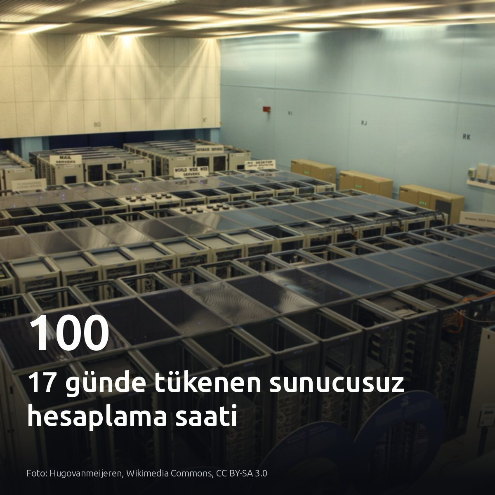
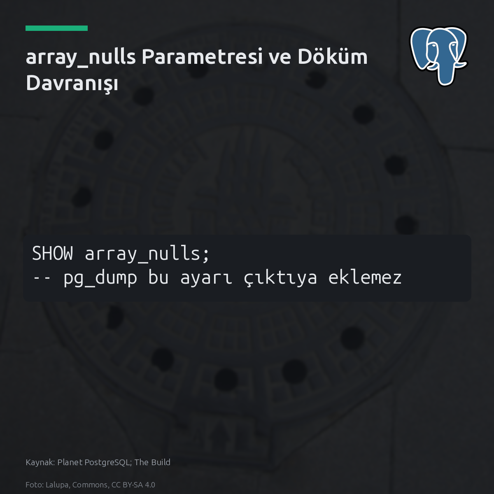
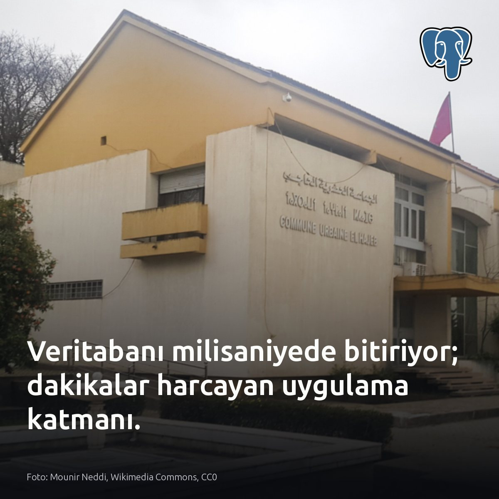
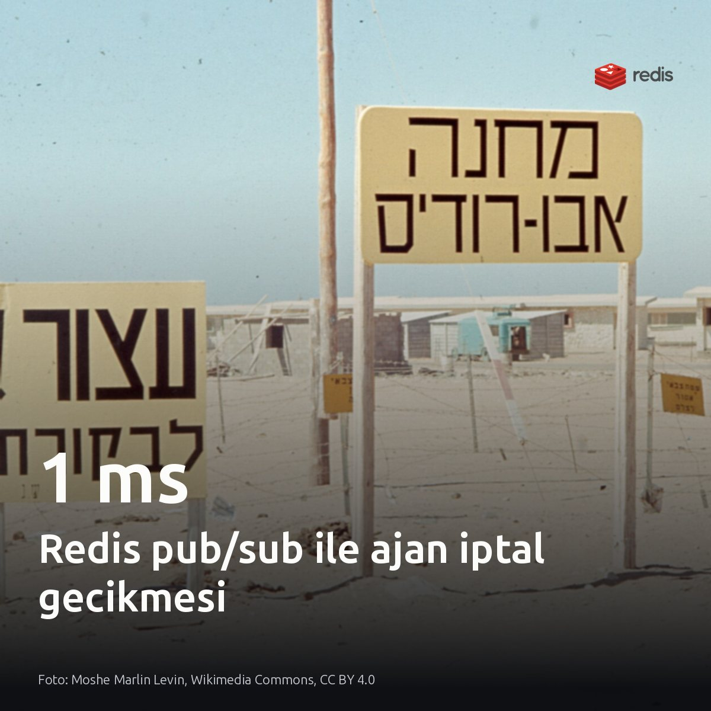
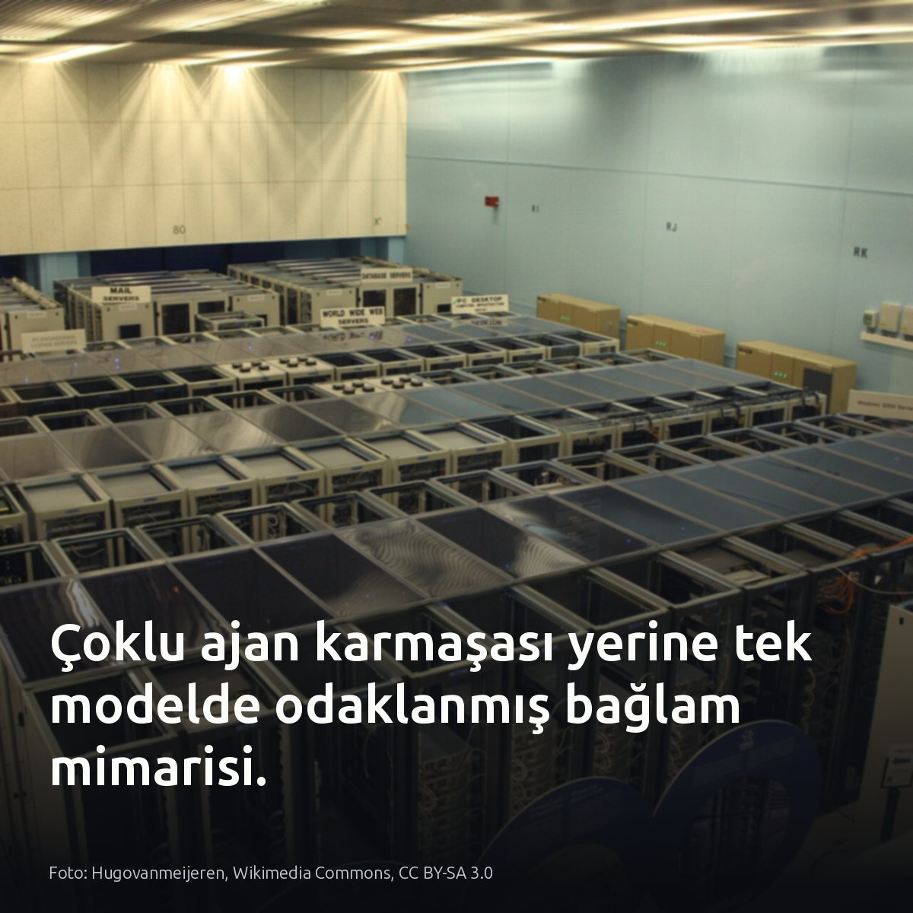

Metni kopyala, kartı indir, LinkedIn'de yapıştır. Bağlantılar gönderiye değil ilk yoruma.

Sunucusuz veritabanında açık unutulan bağlantılar, 100 hesaplama saatini 17 günde tüketti. Yönetim arayüzünün her 15 saniyede bir arka uca gönderdiği yoklama çağrıları, sunucusuz mimarinin sıfıra ölçeklenmesini tamamen engelledi. Veritabanı hiç uykuya geçmedi. Kullanım 100,46 saate ulaştığında veritabanına bağlı servisler yanıt vermeyi kesti. #postgresql #serverless #databaseKartı indir
Kaynak ve detaylar: Kart kaynağı ve referanslar [S1]-[S6]: https://medium.com/@itsrohit904/how-my-neon-database-used-100-compute-hours-in-just-17-days-1d9a2a29087a?source=rss------database-5

PostgreSQL 20'de silinen array_nulls, eski dökümlerde sessiz veri bozulmasına yol açıyor. pg_dump dosya başında array_nulls ayarını sabitlemediğinden, parametrenin kapalı olduğu hedef veritabanında tırnaksız NULL elemanları doğrudan metin olarak okunur. Geri yükleme 0 hatayla tamamlanıyor. Fakat text[] sütunlarındaki her boş eleman artık 4 karakterlik bir metne dönüşüyor. Ayarın varsayılan açık değerini değiştirmemiş kümeler bu durumdan etkilenmez. #postgresql #pgdump #dbaKartı indir
Kaynaklar: • Planet PostgreSQL & The Build: https://postgr.es/p/9xm

Yavaşlığın suçlusu veritabanı sanılıyor; oysa sorgu milisaniyede biterken Python kodu dakikalar harcıyor. Sorun veritabanı motorunda değil. Veritabanında doğrudan çalıştırılan sorgu milisaniyeler içinde tamamlanıyor. Buna karşın aynı işlem Python uygulamasından çağrıldığında toplam süre dakikalara uzuyor. Birçok performans krizinde motor yavaş kalmıyor; tam tersine veritabanı uygulamanın satır bazlı serileştirme döngüsünü bekliyor. Gecikme faturası sorgu planlayıcısına değil, istemci tarafındaki veri aktarım ve nesne dönüştürme maliyetine ait. #postgresql #database #pythonKartı indir
Kaynaklar: • [S1-S5] https://medium.com/@techybob/postgresql-python-your-database-isnt-slow-your-python-code-is-8d7422c8770a?source=rss------postgresql-5 • Görsel kaynağı: Mounir Neddi, Wikimedia Commons, CC0

Farklı sunuculardaki bir ajanı durdurmak 11,3 saniye sürüyordu; gecikme 1 ms seviyesine indi. İstek görevi yürüten makineye değil başka bir düğüme ulaştığında, üretici bayrağı yalnızca her 16 olayda bir kontrol ediyordu. Ajan durmadı. Kod yazmayı ve korumalı alanda çalıştırmayı 11,3 saniye boyunca sürdürdü. Yeni mimaride eşlikçi bir izleme görevi devreye alındı. Bu görev, her oturum için Redis üzerinde çalışma adına açılan özel kanala abone oluyor. Yayınlanan sinyalle yoklama beklemeden araya giriliyor; oturum yaklaşık 1 milisaniyede kesiliyor. Bayrak yoklamak yerine doğrudan sinyal dinlemek, I/O yükü üretmeden süreci anında kesiyor. #redis #distributedsystems #infrastructureKartı indir
Yazıda bahsedilen mimari detaylar ve test sonuçları: Kaushic Aravind, Cancel a Running AI Agent Across Servers with Redis Pub/Sub: https://medium.com/@kaushicbaravind/cancel-a-running-ai-agent-across-servers-with-redis-pub-sub-842ae235e07a?source=rss------postgresql-5

Ajan sayısını artırmak zekâyı büyütmüyor; oturum başına 200 mesajlık koordinasyon yükü getiriyor. Yönetici modellerde 30 dakikalık sessiz kilitlenmeler oluşuyor. Hata yayılımı çıktıyı boğuyor. Geniş ve asenkron denetim gerektiren mimarilerde çoklu ajan, dar kapsamlı yerel işletim görevlerinde ise tek ve odaklanmış bir model seçilmeli. Kendi yerel iş akışınızda modeller arasındaki koordinasyon kuyruğuna bakın. #yapayzeka #multiagent #localllmKartı indir
Görsel kaynağı: Hugovanmeijeren, Wikimedia Commons, CC BY-SA 3.0 Kaynaklar: [S1] https://medium.com/@afrafalakh16/i-built-a-multi-agent-system-then-i-realized-more-agents-dont-always-mean-more-intelligence-cc59f436968a?source=rss------large_language_models-5 [S2], [S3], [S4], [S5] https://github.com/battysh/batty